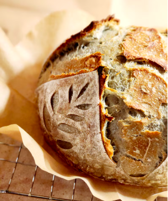

Basic Sourdough

Ingredients
- 50g bubbly, active starter
- 350g warm water
- 500g bread flour
- 9g fine sea salt
Process
- Whisk starter and water together in large bowl with fork.
- Add flour and salt, combine until stiff dough forms.
- Cover with damp towel and let rest for 30 minutes.
- Work dough into smooth ball by folding outside edge into center and repeating all the way around.
- Bulk rise - Cover bowl with damp towel and let rise overnight at room temperature.
- Dump dough onto lightly floured surface and shape.
- Flip dough and let rest for 5-10 minutes
- Place dough into bowl seam side up.
- Second rise - Cover bowl and let rest for 30 minutes to 1 hour.
- Preheat oven to 450 degrees and cut parchment paper to fit baking pot.
- Place paper over dough and invert bowl to release dough.
- Score surface of dough in cross-hatch pattern with small knife.
- Transfer to baking pot.
- Bake on center rack for 20 minutes covered, then 30 minutes uncovered.
- Remove loaf from baking pot and bake directly on oven rack for 10 minutes to crisp crust.
- Transfer to wire rack and cool for 1 hour before slicing.